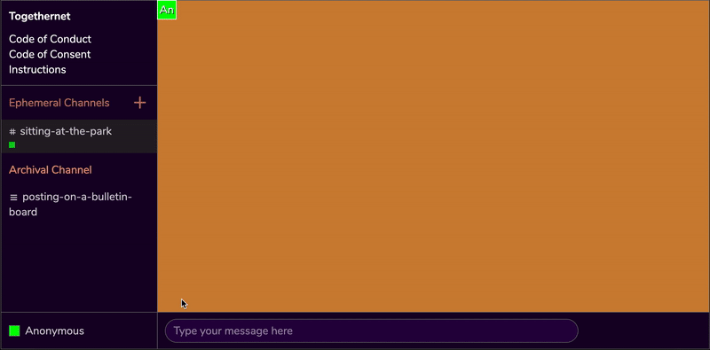
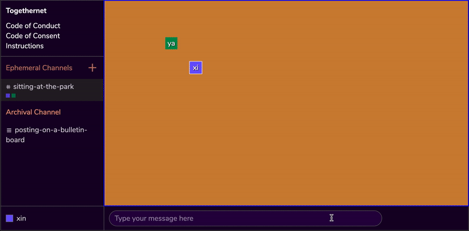
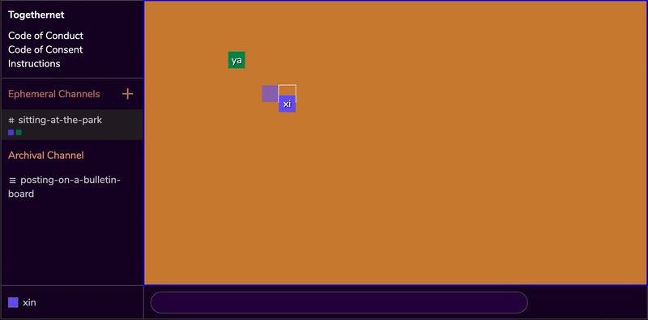
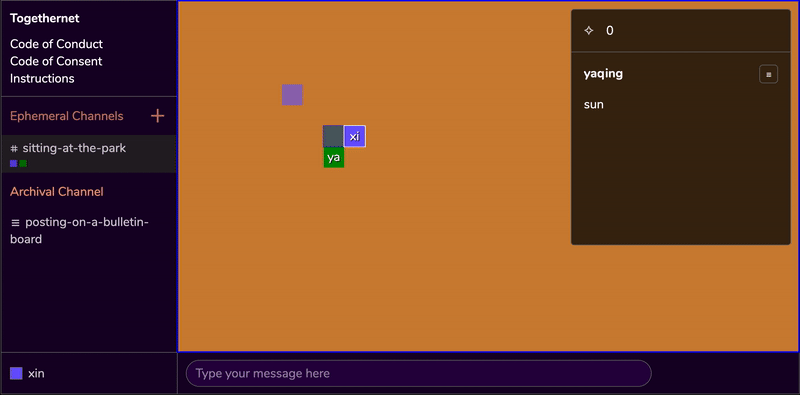

Togethernet Software Orientation
We invite you to open the Togethernet Demo while going over the software orientation we have prepared for you. We will walk over the basic features you need to know to get started.
Network
Anonymity
Togethernet is a peer-to-peer application with no login system that identifies individual users.
The benefit to this is that your personal information doesn’t get stored on someone’s server - which provides protection to your digital body.
However, the disadvantage is that if you get disconnected from a group session due to inactivity or internet
instability, when you return to the room you will be recognized by the network as a brand-new participant, and you will need to rename yourself to be recognized by your community.
If being able to identify everyone who is in the space at all times is something that makes you feel more comfortable, we recommend that you use an open-source video conferencing software such as Jitsi to communicate and check-in with your group. While doing so, you can simultaneously use Togethernet to take notes and jolt down ideas.
You could think of Togethernet as a replacement for text-based collaborations that take place on Google docs.
Disconnection
The software is still in the alpha version, so with that in mind we value your patience while using Togethernet.
Be ready to reload the page when something seems to be not responding or working in ways that don’t seem right. Depending on the stability of you and your collaborators’ network you may need to do this frequently. We will continue to work on peer to peer network stability in the upcoming software updates and look forward to improving the reliability that we are able to offer this community.
Navigation
Edit Avatar Name
When you enter Togethernet, you will be brought to the default Ephemeral Channel #sitting-in-the-park. You will appear in the Navigation Space as an Anonymous avatar with a randomly assigned color.
We strongly recommend that you give your avatar a name that is recognizable by your community before sending any messages. This functions to ensure that the space remains familiar and that anonymity is a data protection function rather than a feature that obscures communal accountability.
Moving Around
To move your avatar, you will first need to click on the Navigation Space to give focus to the area, then use your ←, ↑, →, ↓ ARROW KEYS to visit a different location on the screen.
Send Message
The location of your avatar determines the location of where you leave a message on the screen. In order to send a message, click on the Message Input field at the bottom of the interface, write your message, and hit ENTER.
TIP: To switch focus between Navigation Space and Message Input, you can also use the shortcut key combo SHIFT + SPACE BAR.
Read Message
To read a message, your avatar needs to move up into a neighboring position on any one of the four sides of a Message Record.
TIP: Another way to read the message is by hovering your mouse cursor over a text record. This enables you to quickly browse through different messages on the screen without having to move around. However you won’t be able to perform further interactions with the text record such as Replying to a Thread or Consent to Archive without moving your avatar next to the message record.
Replying to a Thread
In order to reply to a message, you can move your avatar so that it is neighboring an existing Message Record, and add your message in that position. You can continue to add to the thread by extending the message records on the screen.
Meeting Modes
Togethernet’s foundational goal is to benefit individuals and organizations that are interested in exiting surveillance capitalism and practicing consentful, transparent communications within their communities. Inspired by Freedom is an Endless Meeting by Francesca Polletta, the software offers three different meeting modes – Facilitated Mode, Feedback Mode, and Egalitarian Mode, each bundled with different features.
Facilitated Mode
The room creator can appoint 1~3 facilitator(s) in this mode. The facilitators may use the Amplify feature to outline agendas, ask questions and guide conversations. Participants in the room also have access to the majority rule feature and can turn any messages into a voting poll.
- 1~3 facilitator(s)
- Amplify messages (only available to facilitators)
- Majority rule
Feedback Mode
The room creator can appoint 0~3 facilitator(s) in this mode. If a facilitator is appointed, they can use the amplify feature to outline agendas, ask questions and guide conversations. Participants in the room also have access to the consentful gesture feature, which enables participants to provide secondary feedback, such as “agree”, “hesitant”, “disagree”, “block” on a message.
- 0~3 facilitator(s)
- Amplify messages (only available to facilitators)
- Consentful gestures: agree, hesitatnt, disagree, block
Egalitarian Mode
The organization does not use a facilitator and members discuss issues without implementing a meta-structure. Most chatrooms function this way and its ability to maintain consent may be limited.
If you feel comfortable with the orientation materials and would like to download Togethernet, we'd like to invite you to visit our Github page to download Togethernet.
Ready to Proceed Pause and Email Us